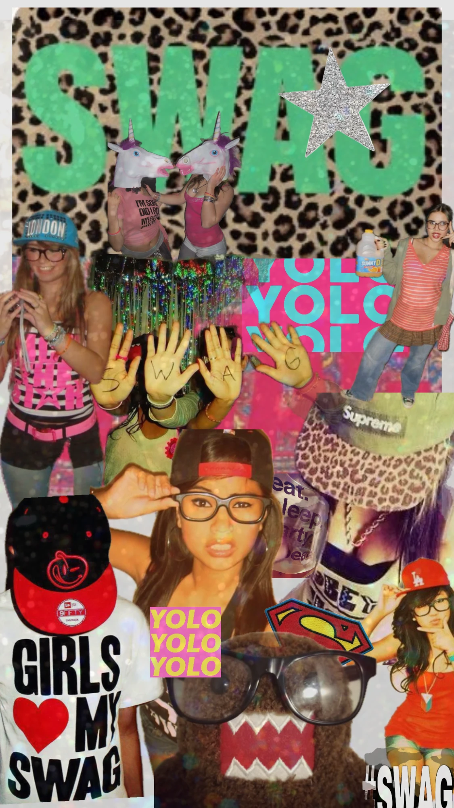
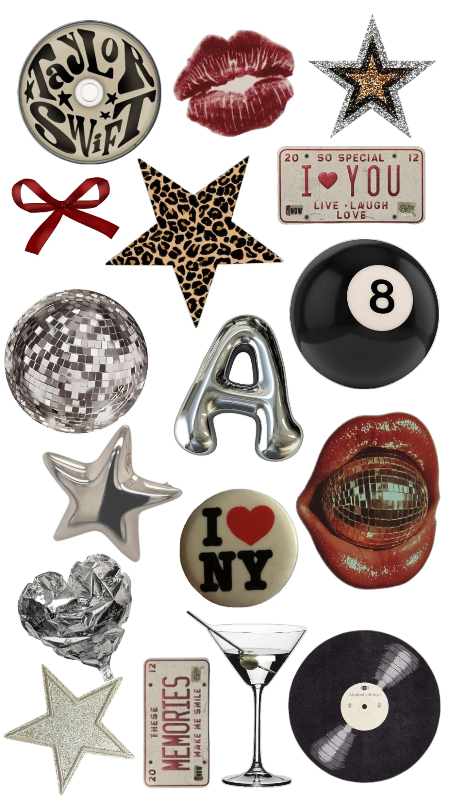
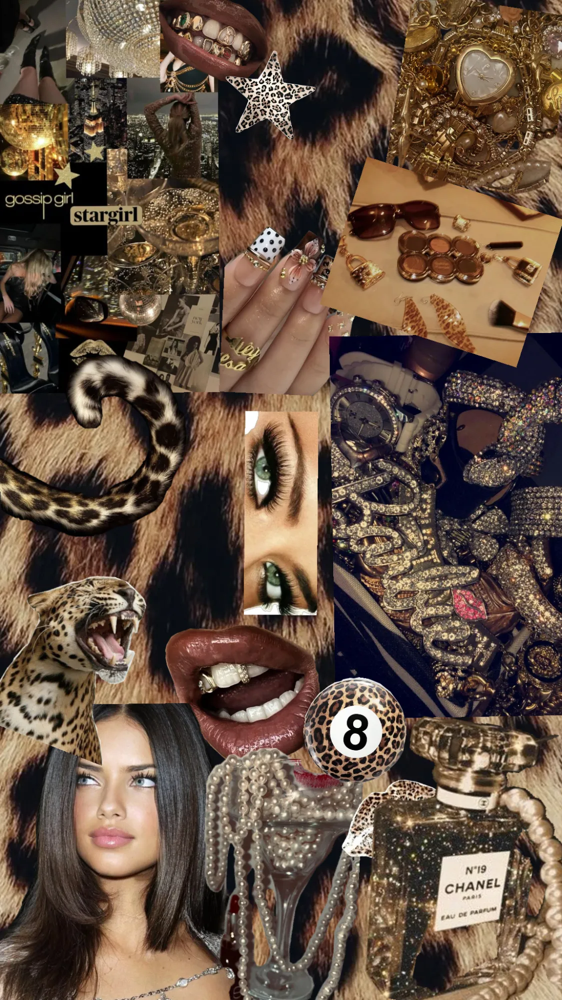

La app deja de ser un sistema operativo y se vuelve un periódico neoyorquino de 2003. La portada es la columna de él para ella; cada sección del periódico es una puerta: al tocarla se pasa la página y cambia toda la estética. Gris = estructura; rojo = interacción.



Portada → toca un titular → transición de pasar la página (doblez de papel) → la sección ocupa toda la pantalla con su propia estética. La esquina doblada arriba a la derecha siempre vuelve a la portada. La portada en sí conserva la estética de papel de periódico (blanco hueso, tinta negra, un acento rosa) y es lo único constante; cada sección rompe con ella.
| Sección del periódico | Módulo anterior | Estética propia |
|---|---|---|
| Portada + La columna | (nuevo) Boot/escritorio | Papel periódico NY 2003, serif editorial, tinta, toque rosa |
| Estilo · Y2K | Paparazzi (álbum) | Collage editable de fotos de la galería sin fondo + stickers + recortes; mover, girar, escalar y fijar con candado |
| Sociedad · Alfombra roja | Paparazzi (cámara + flash) | Fotos tomadas en la app que quedan como polaroids con texto. Dark leopard: leopardo, dorado, pedrería, perlas, alas de ángel, flash, collage de recortes |
| Los vinilos de Big | CD Player | Penthouse de noche: tocadiscos + lista de fundas de vinilo apiladas, marcadas por quién la dedicó |
| Cartelera | Blockbuster | Videoclub: estantería de VHS, neón, tickets |
| Cartas al editor | MVP Messenger | Papel de carta, máquina de escribir, edición extra |
| Suscripción (ajustes) | Panel de control | Formulario de suscripción del periódico |